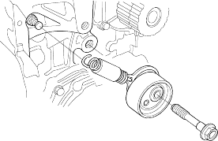
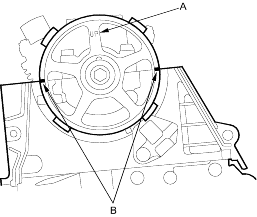

- Remove the timing belt (see page 6-18).
- Remove the auto-tensioner.

Installation:
- Clean the timing belt pulleys and the upper and lower covers.
- Set the crankshaft to TDC. Align the TDC mark (A) on the timing belt drive pulley with the pointer (B) on the oil pump.

- Clean the camshaft pulley and set it to TDC.
- The ''UP'' mark (A) on the camshaft pulley should be at the top.
- Align the TDC marks (B) on the camshaft pulley with the top edge of the head.
